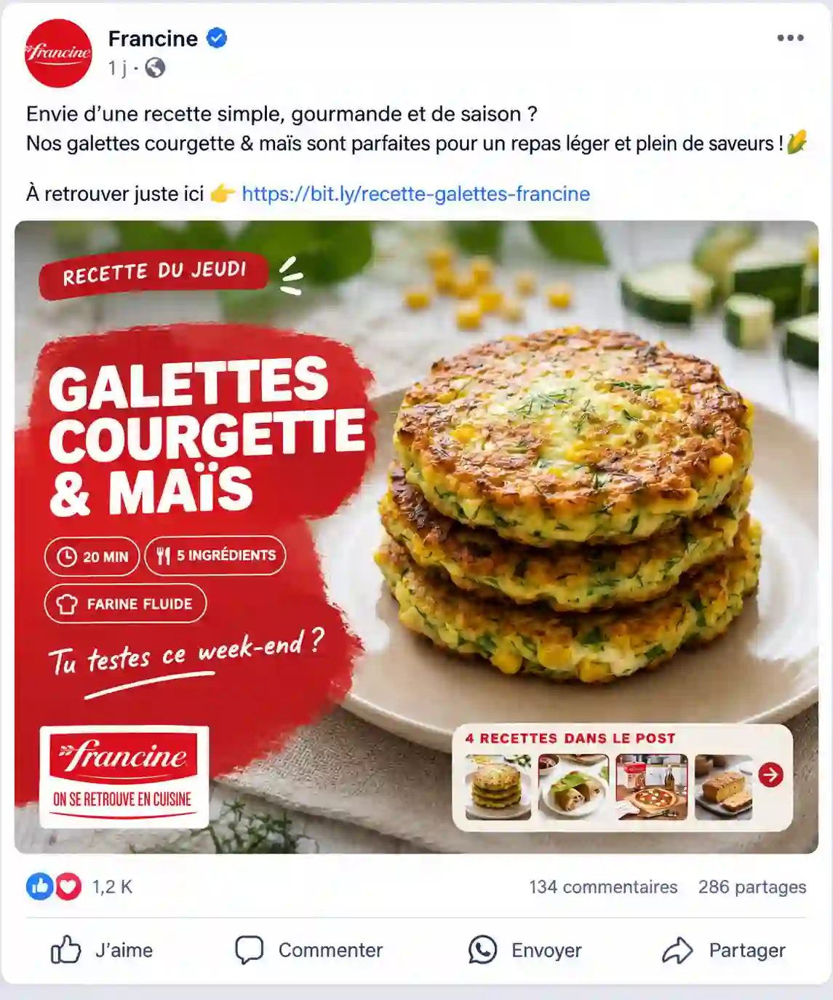
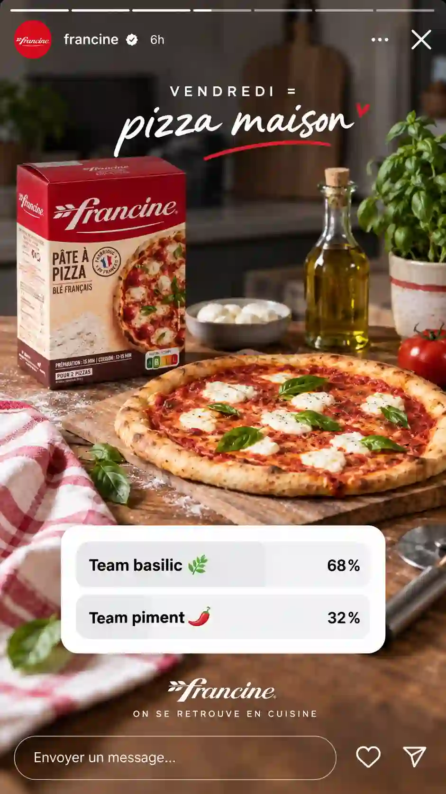
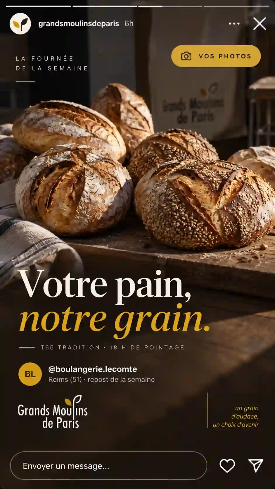
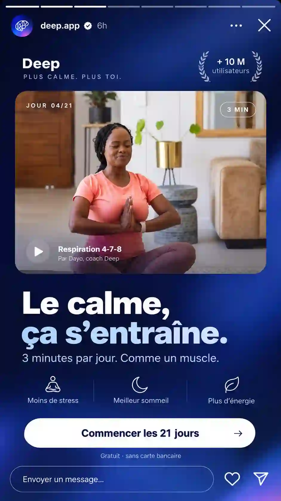
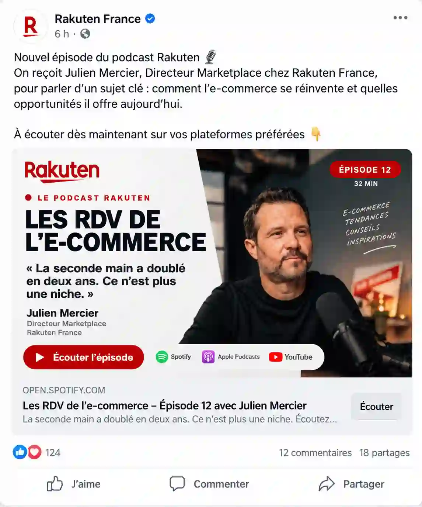
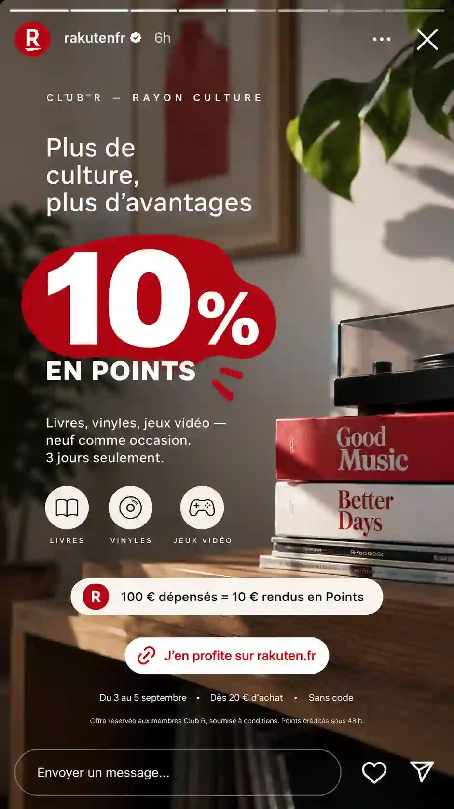

01Le mandat
Un profil qui connaît déjà France Télévisions, et près de 9 ans de Social Media derrière elle.
Audrey n'arrive pas chez Lumni avec uniquement une expérience de marques. Elle a déjà travaillé dans l'écosystème France Télévisions, sur des sujets liés aux publics jeunes, avant de construire près de neuf ans d'expérience Social Media auprès de marques comme Francine, Rakuten France ou Grands Moulins de Paris.
Aujourd'hui, elle réunit culture éditoriale, création de contenus, animation de communautés et pilotage de la performance.
C'est cette combinaison, et la proximité particulière de son parcours avec Lumni, qui nous a poussés à vous la recommander.
02Profil
Profil recommandé
Audrey
Senior Social Media & Community Manager
France · ~9 ans d'expérience
- Stratégie & ligne éditoriale
- Création et adaptation de contenus
- Instagram · TikTok · Facebook · LinkedIn
- Community Management & modération
- Influence & UGC
- Planning éditorial
- Reporting & optimisation
- Canva & CapCut
Audrey pilote depuis près de neuf ans des dispositifs Social Media complets : stratégie éditoriale, création, rédaction, publication, community management, influence et analyse des performances.
Pourquoi Audrey pour Lumni
01
Elle connaît déjà l'environnement France Télévisions et les contenus jeunesse
Audrey a travaillé au sein de France Télévisions sur la presse jeunesse. C'est ici son expérience la plus différenciante : elle connaît déjà les contraintes d'un environnement média, les exigences éditoriales du service public et les problématiques liées aux audiences jeunes.
02
Une Social Media Manager qui produit, pas uniquement qui pilote
Audrey ne s'arrête pas à la stratégie ou au calendrier éditorial. Elle conçoit, rédige, crée et adapte elle-même des contenus visuels et vidéo, puis les publie et anime les communautés. Cette polyvalence correspond directement au caractère très opérationnel du poste Lumni.
03
Une vraie pratique des mécaniques d'engagement
Sondages, formats participatifs, contenus pédagogiques, vidéos courtes, prises de parole liées à l'actualité d'une marque : ses expériences pour Francine, Deep Belief ou Rakuten France montrent sa capacité à transformer un sujet en contenu pensé pour provoquer une réaction plutôt que simplement occuper un calendrier.
04
Elle sait piloter le Social comme une boucle éditoriale
Audrey combine veille, programmation, community management, suivi des KPI, benchmark et recommandations d'optimisation. Les réactions de l'audience et les performances des contenus servent à ajuster les publications suivantes, une logique directement pertinente pour développer l'engagement et les audiences de Lumni.
Média, jeunesse, éditorial, vidéo, TikTok, Instagram, communauté et performance : son parcours couvre une grande partie des enjeux du mandat Lumni.
03Expériences d'Audrey
Un parcours construit auprès de marques aux problématiques Social variées.
Audrey a accompagné Francine, Grands Moulins de Paris, Rakuten France, Sofinco, Effy, BASF Agro, Deep Belief, Madeho, Wooskill, Vetoccitan, Strammer et la Mairie de Paris.






04Notre lecture
Ce qui nous semble important pour Lumni
01
Penser chaque contenu pour son canal.
Un programme conçu pour Lumni n'est pas automatiquement un bon Short, Reel ou TikTok. Le travail Social consiste à identifier dans chaque contenu l'angle, l'extrait ou le moment capable de fonctionner de manière autonome, puis à l'adapter aux codes de la plateforme sans perdre sa valeur éditoriale.
02
Parler aux moins de 18 ans sans essayer artificiellement de leur ressembler.
Tendances, références et formats évoluent vite. L'enjeu n'est pas de suivre chaque trend, mais de comprendre lesquelles permettent réellement à Lumni de rejoindre les conversations de son public tout en conservant sa crédibilité de média éducatif.
03
Utiliser les signaux de l'audience pour piloter l'éditorial.
Commentaires, questions, taux de rétention, engagement et performances des différents formats donnent des indications directes sur ce qui intéresse l'audience. Community management, veille, programmation et création doivent alimenter une même boucle éditoriale.
05Qui sommes nous
Nous ne sommes ni une agence, ni une plateforme.
Metodas identifie des freelances Marketing & Créatifs seniors pour des missions à fort enjeu. Nous sélectionnons les profils, cadrons la collaboration et en restons garants jusqu'à son terme, sans créer d'intermédiaire entre vous et le freelance.
- +250 profils pré-évalués
- +100 missions placées
- +15 rôles Marketing & Créatifs
- +7 ans d'expérience en moyenne


06Prêt à travailler avec nous ?
Voyons s'il y a match
Un premier échange pour faire connaissance, parler de votre projet et voir si le match est là. Sans engagement.